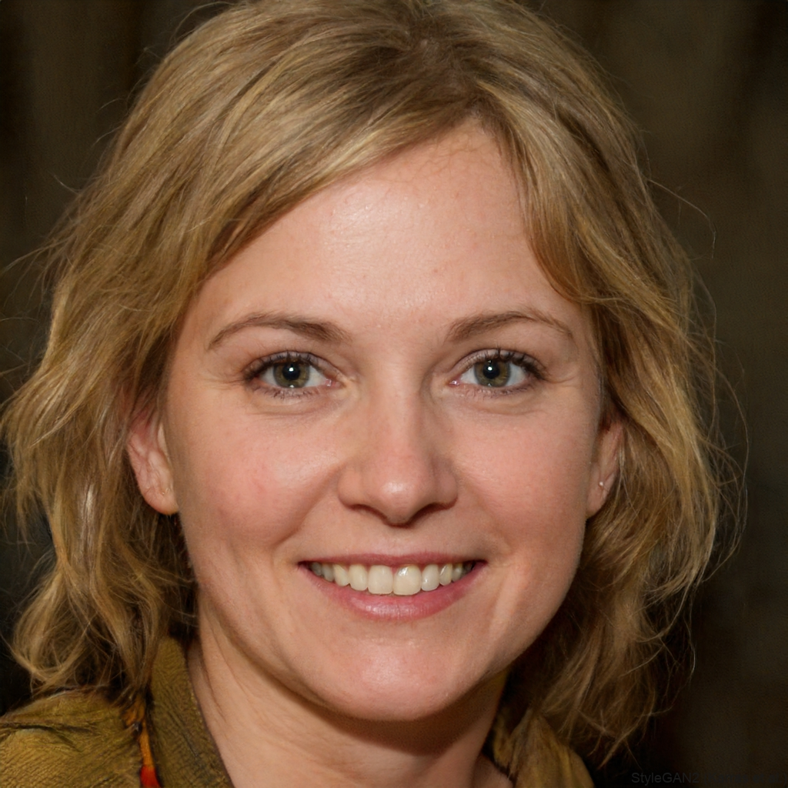

Lochquarry Outdoor School
is set in acres of land in the heart of the majestic Argyll hills.
Meet our staff
Claire Jack
Position:Centre Manager
Responsible for: The overall running of the centre and all of its activities
Favourite Activity: Pole climb

Robbie Elliot
Position: Senior Instructor (Land)
Responsible for: Overseeing all of the land based activities
Favourite Activity: Hillwalking in the beautiful Scottish highlands

Marion Hunter
Position:Centre Administrator
Responsible for: Making bookings and arranging activity slots for groups
Favourite Activity: Making sure everyone has a great time